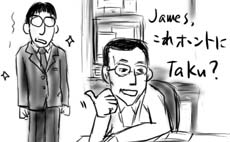
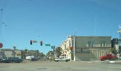
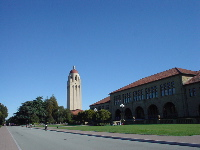
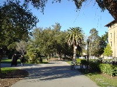
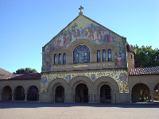

午前のうちにPalo Altoから戻ってきました。
着替えを持って行くのも面倒だったので、昨日と同じスーツのまま午後から出勤したのでした。１日いないだけで、すごい数のメールが届いていました。よく分からないものも混じっていたので、確認するために同僚Duyの部屋へ向かいます。
Duyは僕の姿を見るなり「ヘーイ、これ本当にTaku？」と同室のJamesに聞いていました。おもしろいなぁ。Duyは「ちゃんとした服装に、ヒゲも剃ってあるし。…ハンチョウ？」と言っています。普段僕がいかにいい加減な格好＋無精髭でオフィスをうろついているか、という話です。

ちなみに「班長」は、フジヤマやゲイシャと同じような有名日本語なんだそうです。ハンチョ。
Takuは会社での通り名です。こちらの人は、名前が２母音より多いと大変呼びづらいみたいです。
仕事でPalo Alto方面へ出張でした。
サンフランシスコ空港へ降り立ったのですが、改めて空港の表示案内の不親切ぶりはおかしいですよ！矢印に従って行くと通路が封鎖されていたり、空港内を走るトラムのレッドラインとブルーラインはどちらも車体が青かったり、レンタルカーのガレージからEXITの矢印に従っていくと一方通行を逆走させられたりします。
そんな感じで空港内をうろちょろした後、同行した駐在員マネージャの運転するレンタカーでガレージを脱出してびびりました。空、青っ！全米でも最悪レベルの空気汚染と言われるロサンジェルスの空は、どんよりとスモッグでけぶっているのが普通なのですが、サンフランシスコからPalo Altoにかけての青空はとても澄んでいて、まるで別物のようです。遠景の見え方がまるで違います。

ミーティングは夕方からだったので、ホテルにチェックインした後、スタンフォード大学を小一時間ほど観光。
  
相変わらず海外の大学はえげつないくらいに奇麗ですな。しっかりと観光名所にもなっているようで、ガイドの人がツアー客を引き連れて建物の説明をしていました。こんなところで勉強できたら、また力の入り方も違うんだろうなぁ！(やればできる子だから並の根拠レス)。生協でスタンフォード大学マグカップを購入。お上りさん丸出しです。
ミーティングが始まる前にオフィスに着いたのですが、あちこちから集まってきた駐在員たちの共通話題はやっぱりゴルフだったので、相変わらずのはみ男子ぶりを発揮しながら、早くミーティングが始まらないかなぁと時計を気にしていました。僕はイルカか。季節外れの雪が心に降り積もります。
夜中にホテルに帰還。赴任時に泊まったのと同じホテルだったのですが、あのドライヤは普通のL字型ドライヤに置き換わっていました。なんだかガッカリだよ…。
{kind=link}